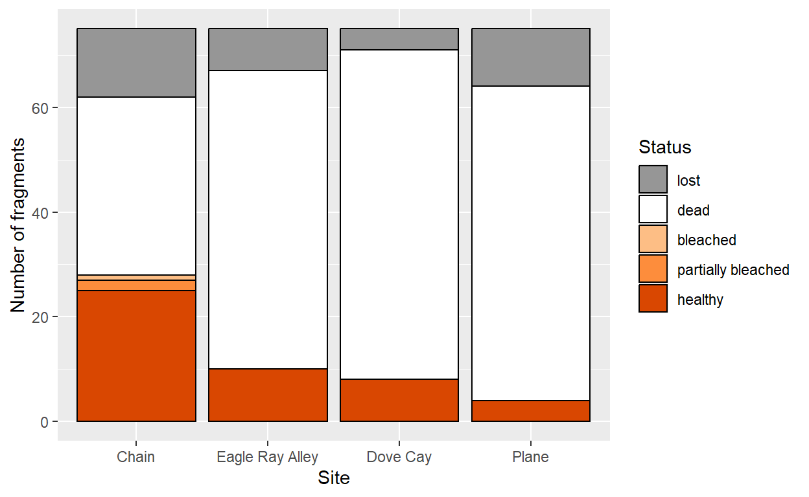
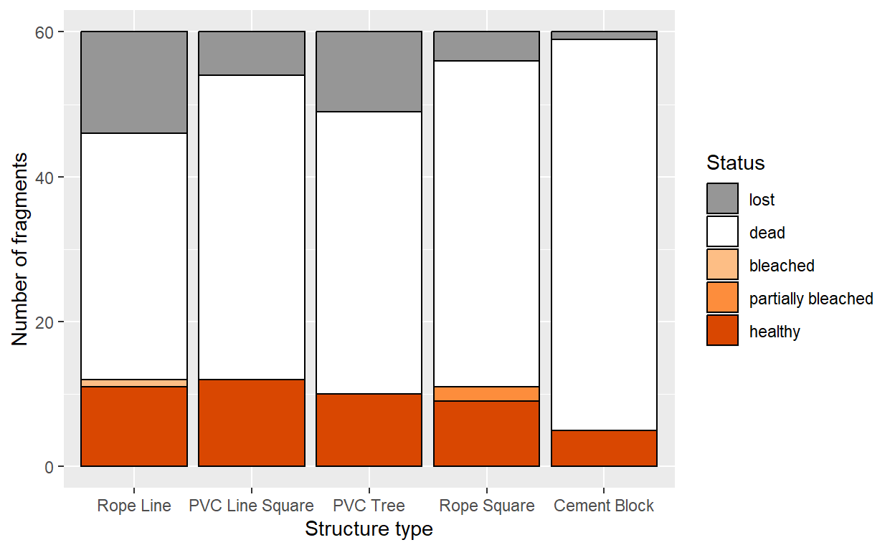
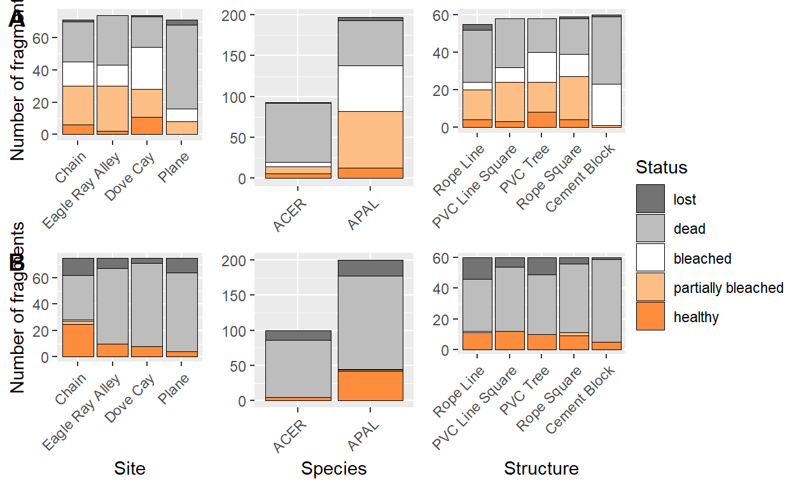
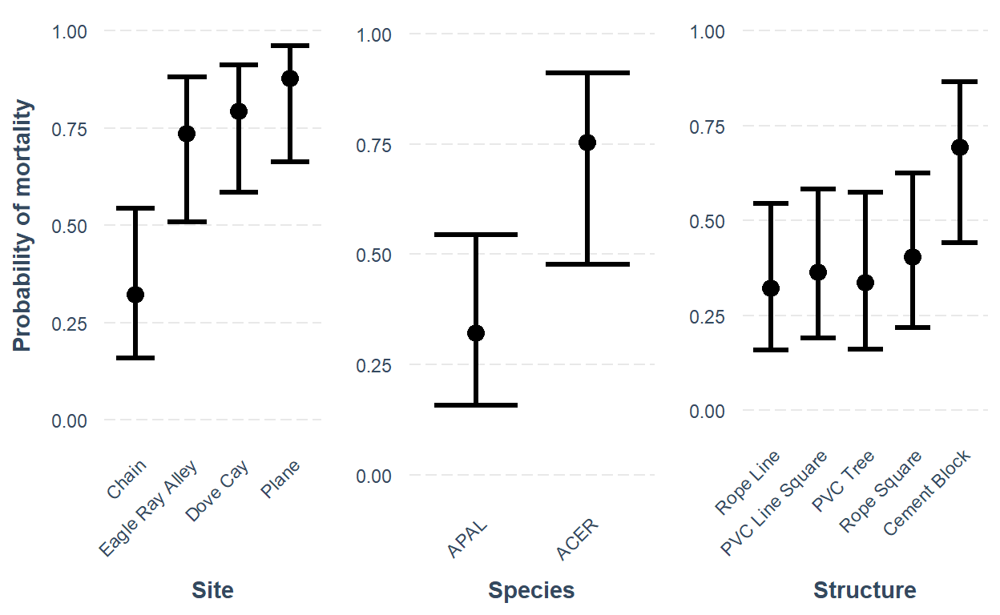

Acropora fragments on in-situ nursery structures in South Caicos
This code analyzes coral fragment monitoring data from the South Caicos Coral Restoration Consortium in-situ nurseries to investigate mortality rates and bleaching resilience by species, site, nursery structure type, and nursery depth.
Full paper citation: Debuysser, J., Alexander, K., Hertler, H. (In press). Mortality and recovery rates of Acropora fragments on in-situ nurseries after the 2023 bleaching event in the Turks and Caicos Islands.
This code sets document-wide options and imports all necessary packages.
This code imports the raw data, and formats it to be more useful for analysis.
# input data
all_frags <- read_excel(here("data", "CoralNurseryLog_4-1-24.xlsx"), sheet = "Main Log", col_types = c("text", "text", "text", "text", "text", "text", "text", "text", "text", "text", "date", "numeric", "date", "numeric", "numeric", "text", "date", "numeric", "text", "numeric", "text", "date", "numeric", "text")) %>%
clean_names()
# set NA values
na_strings <- c("NA", "N/A", "n/a", "photo n/a")
all_frags <- all_frags %>%
replace_with_na_all(condition = ~.x %in% na_strings)
# change alive to healthy
all_frags <- all_frags %>%
mutate(t2_health_condition = case_when(t2_health_condition == "alive" ~ "healthy",
t2_health_condition != "alive" ~ t2_health_condition))
# add live or dead columns
all_frags <- all_frags %>%
mutate(t2_simplified_health = case_when(t2_health_condition == "healthy" ~ "alive",
t2_health_condition == "bleached" ~ "alive",
t2_health_condition == "partially bleached" ~ "alive",
t2_health_condition == "dead" ~ "dead",
t2_health_condition == "lost" ~ "lost"))
# fix column types
all_frags$size_t0_cm <- as.numeric(all_frags$size_t0_cm)
all_frags$site_location <- factor(all_frags$site_location, levels = c("Chain", "Eagle Ray Alley", "Dove Cay", "Plane"))
all_frags$structure_type <- factor(all_frags$structure_type, levels = c("Rope Line", "PVC Line Square", "PVC Tree", "Rope Square", "Cement Block"))
all_frags$date_of_t0 <- as.Date(all_frags$date_of_t0)
all_frags$date_of_t1 <- as.Date(all_frags$date_of_t1)
all_frags$date_of_t2 <- as.Date(all_frags$date_of_t2)
# cast t2 health condition to factor
all_frags$t2_health_condition <- all_frags$t2_health_condition %>%
factor(levels = c("lost", "dead", "bleached", "partially bleached", "healthy"))
# remove spaces from t1 health condition, make lowercase, and cast to factor
all_frags$t1_health_condition <- all_frags$t1_health_condition %>%
str_trim() %>%
str_to_lower()
all_frags <- all_frags %>%
mutate(t1_health_condition = case_when(t1_health_condition == "alive" ~ "healthy",
t1_health_condition != "alive" ~ t1_health_condition)) %>%
mutate(t1_simplified_health = case_when(t1_health_condition == "healthy" ~ "alive",
t1_health_condition == "bleached" ~ "alive",
t1_health_condition == "partially bleached" ~ "alive",
t1_health_condition == "dead" ~ "dead",
t1_health_condition == "lost" ~ "lost"))
all_frags$t1_health_condition <- all_frags$t1_health_condition %>%
factor(levels = c("lost", "dead", "bleached", "partially bleached", "healthy"))
# filter by species
apal_frags <- all_frags %>%
filter(acronym == "APAL")
acer_frags <- all_frags %>%
filter(acronym == "ACER")
# filter for fragments that are alive in T2 and by each species
alive_T2 <- all_frags %>%
filter(t2_health_condition == "healthy" | t2_health_condition == "bleached" | t2_health_condition == "partially bleached")
apal_alive_T2 <- alive_T2 %>%
filter(acronym == "APAL")
acer_alive_T2 <- alive_T2 %>%
filter(acronym == "ACER")
# add growth rate columns for each species
acer_alive_T2 <- acer_alive_T2 %>%
mutate(gr_t0_t2_mm_day = (size_t2_cm_john_kort - size_t0_john_kort) * 10 / as.numeric(date_of_t2 - date_of_t0))
apal_alive_T2 <- apal_alive_T2 %>%
mutate(gr_t0_t2_sq_mm_day = (size_t2_cm_john_kort - size_t0_john_kort) * 100 / as.numeric(date_of_t2 - date_of_t0))
# filter for fragments that aren't lost in T2
all_frags_wo_lost <- all_frags %>%
filter(t2_simplified_health != "lost")
# make simplified health into factor
all_frags$t2_simplified_health <- as.factor(all_frags$t2_simplified_health)
all_frags_wo_lost$t2_simplified_health <- as.factor(all_frags_wo_lost$t2_simplified_health)Now we can make some summary tables of the data and create graphs to visualize coral fragment health by site, nursery structure type, and species.
# make summary tables
overall_summary <- all_frags %>%
group_by(t2_health_condition) %>%
summarize(total_frags = n())
summary_by_site <- all_frags %>%
group_by(site_location, t2_health_condition) %>%
summarize(total_frags = n())
summary_by_structure <- all_frags %>%
group_by(structure_type, t2_health_condition) %>%
summarize(total_frags = n())
summary_by_site_and_structure <- all_frags %>%
group_by(site_location, structure_type, t2_health_condition) %>%
summarize(total_frags = n())
ggplot(summary_by_site, aes(x = site_location, y = total_frags, fill = t2_health_condition)) +
geom_col(color = "black") +
labs(x = "Site", y = "Number of fragments", fill = "Status") +
scale_fill_discrete(type = c("#969696", "#ffffff", "#fdbe85", "#fd8d3c", "#d94701"))
Figure 1. Fragment status at T2 by site. The Chain had the most live fragments at T2 of any site.

Figure 2. Fragment status at T2 by nursery structure type. Status did not differ significantly by structure type.
t1_summary_site <- all_frags %>%
filter(!is.na(t1_health_condition)) %>%
group_by(site_location, t1_health_condition) %>%
summarize(total_frags = n())
t1_site_chart <- ggplot() +
geom_col(data = t1_summary_site, aes(x = site_location, y = total_frags, fill = t1_health_condition), color = "black", linewidth = 0.3) +
labs(x = "", y = "Number of fragments", fill = "T1 Status") +
scale_fill_discrete(type = c("#737373","#bdbdbd", "#ffffff", "#fdbe85", "#fd8d3c")) +
theme_gray() +
theme(legend.position = "none", axis.text.x = element_text(angle = 45, hjust = 1, vjust = 1), axis.title.x = element_blank())
t1_summary_species <- all_frags %>%
filter(!is.na(t1_health_condition)) %>%
group_by(acronym, t1_health_condition) %>%
summarize(total_frags = n())
t1_species_chart <- ggplot() +
geom_col(data = t1_summary_species, aes(x = acronym, y = total_frags, fill = t1_health_condition), color = "black", linewidth = 0.3) +
labs(x = "", y = "", fill = "T1 Status") +
scale_fill_discrete(type = c("#737373","#bdbdbd", "#ffffff", "#fdbe85", "#fd8d3c")) +
theme_gray() +
theme(legend.position = "none", axis.text.x = element_text(angle = 45, hjust = 1, vjust = 1), axis.title.x = element_blank(), axis.title.y = element_blank())
t1_summary_str <- all_frags %>%
filter(!is.na(t1_health_condition)) %>%
group_by(structure_type, t1_health_condition) %>%
summarize(total_frags = n())
t1_str_chart <- ggplot() +
geom_col(data = t1_summary_str, aes(x = structure_type, y = total_frags, fill = t1_health_condition), color = "black", linewidth = 0.3) +
labs(x = "", y = "", fill = "T1 Status") +
scale_fill_discrete(type = c("#737373","#bdbdbd", "#ffffff", "#fdbe85", "#fd8d3c")) +
theme_gray() +
theme(legend.position = "none", axis.text.x = element_text(angle = 45, hjust = 1, vjust = 1), axis.title.x = element_blank(), axis.title.y = element_blank())
t2_summary_site <- all_frags %>%
group_by(site_location, t2_health_condition) %>%
summarize(total_frags = n())
t2_site_chart <- ggplot() +
geom_col(data = t2_summary_site, aes(x = site_location, y = total_frags, fill = t2_health_condition), color = "black", linewidth = 0.3) +
labs(x = "Site", y = "Number of fragments", fill = "Status") +
scale_fill_discrete(type = c("#737373","#bdbdbd", "#ffffff", "#fdbe85", "#fd8d3c")) +
theme_gray() +
theme(legend.position = "none", axis.text.x = element_text(angle = 45, hjust = 1, vjust = 1))
t2_summary_species <- all_frags %>%
group_by(acronym, t2_health_condition) %>%
summarize(total_frags = n())
t2_species_chart <- ggplot() +
geom_col(data = t2_summary_species, aes(x = acronym, y = total_frags, fill = t2_health_condition), color = "black", linewidth = 0.3) +
labs(x = "Species", y = "", fill = "Status") +
scale_fill_discrete(type = c("#737373","#bdbdbd", "#ffffff", "#fdbe85", "#fd8d3c")) +
theme_gray() +
theme(legend.position = "none", axis.text.x = element_text(angle = 45, hjust = 1, vjust = 1), axis.title.y = element_blank())
t2_summary_str <- all_frags %>%
group_by(structure_type, t2_health_condition) %>%
summarize(total_frags = n())
t2_str_chart <- ggplot() +
geom_col(data = t2_summary_str, aes(x = structure_type, y = total_frags, fill = t2_health_condition), color = "black", linewidth = 0.3) +
labs(x = "Structure", y = "", fill = "Status") +
scale_fill_discrete(type = c("#737373","#bdbdbd", "#ffffff", "#fdbe85", "#fd8d3c")) +
theme_gray() +
theme(axis.text.x = element_text(angle = 45, hjust = 1, vjust = 1), axis.title.y = element_blank())
figure_legend <- get_legend(t2_str_chart)
t2_str_chart <- t2_str_chart +
theme(legend.position = "none")
figure_plots <- plot_grid(t1_site_chart, t1_species_chart, t1_str_chart, t2_site_chart, t2_species_chart, t2_str_chart, labels = c("A", "", "", "B", "", ""))
figure <- plot_grid(figure_plots, figure_legend, rel_widths = c(1, 0.25))
figure
Figure 3. Health status of coral fragments by site, species, and structure. A. Health status of fragments during the first monitoring period in fall 2023 (T1). B. Health status of fragments during the second monitoring period in spring 2024 (T2).
This code creates useful tables and runs Fishers exact tests to test for significant differences in the the frequency of each health status by site, structure type, and species. Then initial mortality, overall mortality, recovery, and bleached+dead rates are calculated for the same variables, and Fishers exact tests to test for significant differences in those rates. Finally, a binary logistic regression model is created to investigate the effects of each variable on the probability of mortality.
# make overall count table (wo lost)
health_counts <- all_frags_wo_lost %>%
tabyl(t2_health_condition)
# make count and proportion tables by site
health_counts_w_lost <- all_frags %>%
tabyl(site_location, t2_health_condition)
health_counts_wo_lost <- all_frags_wo_lost %>%
tabyl(site_location, t2_health_condition)
health_proportions_w_lost <- health_counts_w_lost %>%
adorn_percentages() %>%
adorn_pct_formatting(digits = 2) %>%
adorn_ns()
health_proportions_wo_lost <- health_counts_wo_lost %>%
adorn_percentages() %>%
adorn_pct_formatting(digits = 2) %>%
adorn_ns()
# make count and proportion tables for simplified health (site)
simplified_health_counts_w_lost <- all_frags %>%
tabyl(site_location, t2_simplified_health)
simplified_health_counts_wo_lost <- all_frags_wo_lost %>%
tabyl(site_location, t2_simplified_health)
simplified_health_proportions_w_lost <- simplified_health_counts_w_lost %>%
adorn_percentages() %>%
adorn_pct_formatting(digits = 2) %>%
adorn_ns()
simplified_health_proportions_wo_lost <- simplified_health_counts_wo_lost %>%
adorn_percentages() %>%
adorn_pct_formatting(digits = 2) %>%
adorn_ns()
# make count and proportion tables by structure
health_counts_w_lost_str <- all_frags %>%
tabyl(structure_type, t2_health_condition)
health_counts_wo_lost_str <- all_frags_wo_lost %>%
tabyl(structure_type, t2_health_condition)
health_proportions_w_lost_str <- health_counts_w_lost_str %>%
adorn_percentages() %>%
adorn_pct_formatting(digits = 2) %>%
adorn_ns()
health_proportions_wo_lost_str <- health_counts_wo_lost_str %>%
adorn_percentages() %>%
adorn_pct_formatting(digits = 2) %>%
adorn_ns()
# make count and proportion tables for simplified health (structure)
simplified_health_counts_w_lost_str <- all_frags %>%
tabyl(structure_type, t2_simplified_health)
simplified_health_counts_wo_lost_str <- all_frags_wo_lost %>%
tabyl(structure_type, t2_simplified_health)
simplified_health_proportions_w_lost_str <- simplified_health_counts_w_lost_str %>%
adorn_percentages() %>%
adorn_pct_formatting(digits = 2) %>%
adorn_ns()
simplified_health_proportions_wo_lost_str <- simplified_health_counts_wo_lost_str %>%
adorn_percentages() %>%
adorn_pct_formatting(digits = 2) %>%
adorn_ns()# convert count table to contingency table (by site)
health_ct <- health_counts_wo_lost %>%
column_to_rownames(var = "site_location")
# run fisher's exact test for sites
health_fisher_test <- fisher.test(health_ct)
health_fisher_test
# make contingency table for simplified health
simplified_health_ct <- simplified_health_counts_wo_lost %>%
column_to_rownames(var = "site_location")
# run fisher's exact test for simplified health
simplified_health_fisher_test <- fisher.test(simplified_health_ct)
simplified_health_fisher_test
# run post-hoc fisher's exact tests for each pairwise comparison of sites
c_dc_simplified_fisher_test <- fisher.test(simplified_health_ct[c(1,2), ])
c_dc_simplified_fisher_test
c_era_simplified_fisher_test <- fisher.test(simplified_health_ct[c(1,3), ])
c_era_simplified_fisher_test
c_p_simplified_fisher_test <- fisher.test(simplified_health_ct[c(1,4), ])
c_p_simplified_fisher_test
dc_era_simplified_fisher_test <- fisher.test(simplified_health_ct[c(2,3), ])
dc_era_simplified_fisher_test
dc_p_simplified_fisher_test <- fisher.test(simplified_health_ct[c(2,4), ])
dc_p_simplified_fisher_test
era_p_simplified_fisher_test <- fisher.test(simplified_health_ct[c(1,2), ])
era_p_simplified_fisher_test
# convert count table to contingency table (by structure)
health_ct_str <- health_counts_wo_lost_str %>%
column_to_rownames(var = "structure_type")
# run fisher's exact test for structures
health_fisher_test <- fisher.test(health_ct_str, simulate.p.value = TRUE)
health_fisher_test
# make contingency table for simplified health
simplified_health_ct_str <- simplified_health_counts_wo_lost_str %>%
column_to_rownames(var = "structure_type")
# run fisher's exact test for simplified health (structures)
simplified_health_fisher_test_str <- fisher.test(simplified_health_ct_str)
simplified_health_fisher_test_str# filter out fragments that were not photographed in t1
all_frags_wo_t1_na <- all_frags %>%
filter(!is.na(t1_health_condition))
all_frags_wo_t1_na_wo_lost <- all_frags_wo_t1_na %>%
filter(t1_health_condition != "lost") %>%
filter(t2_simplified_health != "lost")
all_frags_wo_t1_na_wo_lost$t1_health_condition <- all_frags_wo_t1_na_wo_lost$t1_health_condition %>%
factor(levels = c("healthy", "partially bleached", "bleached", "dead"))
all_frags_wo_t1_na_wo_lost$t2_simplified_health <- all_frags_wo_t1_na_wo_lost$t2_simplified_health %>%
factor(levels = c("alive", "dead"))
all_frags_wo_t1_na_wo_lost$structure_type <- all_frags_wo_t1_na_wo_lost$structure_type %>%
factor(levels = c("Rope Line", "PVC Line Square", "PVC Tree", "Rope Square", "Cement Block"))
# make summary table and plot
summary_t2_by_t1_health <- all_frags_wo_t1_na %>%
group_by(t1_health_condition, t2_health_condition) %>%
summarize(total_frags = n())
summary_t2_by_t1_health$t2_health_condition <- factor(summary_t2_by_t1_health$t2_health_condition, levels = c("lost", "dead", "bleached", "partially bleached", "alive"))
# make count, propoprtion, and contingency tables
t2_by_t1_health_counts <- all_frags_wo_t1_na %>%
tabyl(t1_health_condition, t2_simplified_health)
t2_by_t1_health_prop <- t2_by_t1_health_counts %>%
adorn_percentages() %>%
adorn_pct_formatting(digits = 2) %>%
adorn_ns()
t2_by_t1_health_counts_wo_lost <- all_frags_wo_t1_na_wo_lost %>%
tabyl(t1_health_condition, t2_simplified_health)
t2_by_t1_health_prop_wo_lost <- t2_by_t1_health_counts_wo_lost %>%
adorn_percentages() %>%
adorn_pct_formatting(digits = 2) %>%
adorn_ns()
t2_by_t1_health_ct <- t2_by_t1_health_counts_wo_lost %>%
column_to_rownames(var = "t1_health_condition")
# run fisher's exact test
t2_by_t1_health_fisher_test <- fisher.test(t2_by_t1_health_ct)
t2_by_t1_health_fisher_test
t1_a_pb_fisher_test <- fisher.test(t2_by_t1_health_ct[c(1,2), ])
t1_a_pb_fisher_test
t1_a_b_fisher_test <- fisher.test(t2_by_t1_health_ct[c(1,3), ])
t1_a_b_fisher_test
t1_a_d_fisher_test <- fisher.test(t2_by_t1_health_ct[c(1,4), ])
t1_a_d_fisher_test
t1_pb_b_fisher_test <- fisher.test(t2_by_t1_health_ct[c(2,3), ])
t1_pb_b_fisher_test
t1_pb_d_fisher_test <- fisher.test(t2_by_t1_health_ct[c(2,4), ])
t1_pb_d_fisher_test
t1_b_d_fisher_test <- fisher.test(t2_by_t1_health_ct[c(3,4), ])
t1_b_d_fisher_testt1_health_by_site_counts <- all_frags_wo_t1_na_wo_lost %>%
tabyl(site_location, t1_health_condition)
t1_health_by_site_prop <- t1_health_by_site_counts %>%
adorn_percentages() %>%
adorn_pct_formatting(digits = 2) %>%
adorn_ns()# count up totals and frags in each category
t1_total <- all_frags %>%
filter(t1_health_condition != "lost" & !is.na(t1_health_condition)) %>%
nrow()
t1_dead <- all_frags %>%
filter(t1_health_condition == "dead") %>%
nrow()
t1_alive <- all_frags %>%
filter(t1_simplified_health == "alive") %>%
nrow()
t2_total <- all_frags %>%
filter(t2_health_condition != "lost") %>%
nrow()
t2_dead <- all_frags %>%
filter(t2_health_condition == "dead") %>%
nrow()
t2_alive <- all_frags %>%
filter(t2_simplified_health == "alive") %>%
nrow()
recovered <- all_frags %>%
filter((t1_health_condition == "bleached" | t1_health_condition == "partially bleached") & t2_health_condition == "healthy") %>%
nrow()
dead_after_bleaching <- all_frags %>%
filter((t1_health_condition == "bleached" | t1_health_condition == "partially bleached") & t2_health_condition == "dead") %>%
nrow()
t1_bleached_or_dead <- all_frags %>%
filter((t1_health_condition == "dead" | t1_health_condition == "bleached" | t1_health_condition == "partially bleached")) %>%
nrow()
t1_healthy <- all_frags %>%
filter(t1_health_condition == "healthy") %>%
nrow()
# combine all counts into the same table
total_rates <- data.frame(t1_total = t1_total)
total_rates$t1_dead <- t1_dead
total_rates$t1_alive <- t1_alive
total_rates$t2_total <- t2_total
total_rates$t2_dead <- t2_dead
total_rates$t2_alive <- t2_alive
total_rates$recovered <- recovered
total_rates$dead_after_bleaching <- dead_after_bleaching
total_rates$t1_bleached_or_dead <- t1_bleached_or_dead
total_rates$t1_healthy <- t1_healthy
# calculate mortality, bleaching, and recovery rates
total_rates <- total_rates %>%
mutate(init_mortality_rate = t1_dead / t1_total) %>%
mutate(overall_mortality_rate = t2_dead / t2_total) %>%
mutate(recovery_rate = recovered / (recovered + dead_after_bleaching)) %>%
mutate(t1_bleached_or_dead_rate = t1_bleached_or_dead / t1_total)
# create t1 and t2 health tables
total_t1_health_counts <- all_frags %>%
filter(t1_health_condition != "lost" & !is.na(t1_health_condition)) %>%
group_by(t1_health_condition) %>%
summarize(total_frags = n())
total_t2_health_counts <- all_frags %>%
filter(t2_health_condition != "lost") %>%
group_by(t2_health_condition) %>%
summarize(total_frags = n())# count up totals and frags in each category by site
t1_total_by_site <- all_frags %>%
filter(t1_health_condition != "lost" & !is.na(t1_health_condition)) %>%
group_by(site_location) %>%
summarize(t1_total = n())
t1_dead_by_site <- all_frags %>%
filter(t1_health_condition == "dead") %>%
group_by(site_location) %>%
summarize(t1_dead = n())
t1_alive_by_site <- all_frags %>%
filter(t1_simplified_health == "alive") %>%
group_by(site_location) %>%
summarize(t1_alive = n())
t2_total_by_site <- all_frags %>%
filter(t2_health_condition != "lost") %>%
group_by(site_location) %>%
summarize(t2_total = n())
t2_dead_by_site <- all_frags %>%
filter(t2_health_condition == "dead") %>%
group_by(site_location) %>%
summarize(t2_dead = n())
t2_alive_by_site <- all_frags %>%
filter(t2_simplified_health == "alive") %>%
group_by(site_location) %>%
summarize(t2_alive = n())
recovered_by_site <- all_frags %>%
filter((t1_health_condition == "bleached" | t1_health_condition == "partially bleached") & t2_health_condition == "healthy") %>%
group_by(site_location) %>%
summarize(recovered = n())
dead_after_bleaching_by_site <- all_frags %>%
filter((t1_health_condition == "bleached" | t1_health_condition == "partially bleached") & t2_health_condition == "dead") %>%
group_by(site_location) %>%
summarize(dead_after_bleaching = n())
t1_bleached_or_dead_by_site <- all_frags %>%
filter((t1_health_condition == "dead" | t1_health_condition == "bleached" | t1_health_condition == "partially bleached")) %>%
group_by(site_location) %>%
summarize(t1_bleached_or_dead = n())
t1_healthy_by_site <- all_frags %>%
filter(t1_health_condition == "healthy") %>%
group_by(site_location) %>%
summarize(t1_healthy = n()) %>%
rbind(data.frame(site_location = "Plane", t1_healthy = 0))
# combine all counts into the same table
rates_by_site <- t1_total_by_site
rates_by_site$t1_dead <- t1_dead_by_site$t1_dead
rates_by_site$t1_alive <- t1_alive_by_site$t1_alive
rates_by_site$t2_total <- t2_total_by_site$t2_total
rates_by_site$t2_dead <- t2_dead_by_site$t2_dead
rates_by_site$t2_alive <- t2_alive_by_site$t2_alive
rates_by_site$recovered <- recovered_by_site$recovered
rates_by_site$dead_after_bleaching <- dead_after_bleaching_by_site$dead_after_bleaching
rates_by_site$t1_bleached_or_dead <- t1_bleached_or_dead_by_site$t1_bleached_or_dead
rates_by_site$t1_healthy <- t1_healthy_by_site$t1_healthy
# calculate rates for each site
rates_by_site <- rates_by_site %>%
mutate(init_mortality_rate = t1_dead / t1_total) %>%
mutate(overall_mortality_rate = t2_dead / t2_total) %>%
mutate(recovery_rate = recovered / (recovered + dead_after_bleaching)) %>%
mutate(t1_bleached_or_dead_rate = t1_bleached_or_dead / t1_total)
# create t1 health table
t1_health_counts_by_site <- all_frags %>%
filter(!is.na(t1_health_condition)) %>%
tabyl(site_location, t1_health_condition)
t2_health_counts_by_site <- all_frags %>%
tabyl(site_location, t2_health_condition) %>%
select(-lost)# create contingency tables for fisher's tests
init_mortality_ct_site <- rates_by_site %>%
select(site_location, t1_alive, t1_dead) %>%
column_to_rownames(var = "site_location")
overall_mortality_ct_site <- rates_by_site %>%
select(site_location, t2_alive, t2_dead) %>%
column_to_rownames(var = "site_location")
t1_health_ct_site <- t1_health_counts_by_site %>%
column_to_rownames(var = "site_location")
recovery_ct_site <- rates_by_site %>%
select(site_location, recovered, dead_after_bleaching) %>%
column_to_rownames(var = "site_location")
t1_bleached_or_dead_v_healthy_ct_site <- rates_by_site %>%
select(site_location, t1_bleached_or_dead, t1_healthy) %>%
column_to_rownames(var = "site_location")
# run fisher's tests for the whole table and each pairwise combination of sites for initial mortality
site_init_mort_fishers <- fisher.test(init_mortality_ct_site)
site_init_mort_fishers
c_era_init_mort_fishers <- fisher.test(init_mortality_ct_site[c(1,2),])
c_era_init_mort_fishers
c_dc_init_mort_fishers <- fisher.test(init_mortality_ct_site[c(1,3),])
c_dc_init_mort_fishers
c_p_init_mort_fishers <- fisher.test(init_mortality_ct_site[c(1,4),])
c_p_init_mort_fishers
era_dc_init_mort_fishers <- fisher.test(init_mortality_ct_site[c(2,3),])
era_dc_init_mort_fishers
era_p_init_mort_fishers <- fisher.test(init_mortality_ct_site[c(2,4),])
era_p_init_mort_fishers
dc_p_init_mort_fishers <- fisher.test(init_mortality_ct_site[c(3,4),])
dc_p_init_mort_fishers
# overall mortality tests
site_overall_mort_fishers <- fisher.test(overall_mortality_ct_site)
site_overall_mort_fishers
c_era_overall_mort_fishers <- fisher.test(overall_mortality_ct_site[c(1,2),])
c_era_overall_mort_fishers
c_dc_overall_mort_fishers <- fisher.test(overall_mortality_ct_site[c(1,3),])
c_dc_overall_mort_fishers
c_p_overall_mort_fishers <- fisher.test(overall_mortality_ct_site[c(1,4),])
c_p_overall_mort_fishers
era_dc_overall_mort_fishers <- fisher.test(overall_mortality_ct_site[c(2,3),])
era_dc_overall_mort_fishers
era_p_overall_mort_fishers <- fisher.test(overall_mortality_ct_site[c(2,4),])
era_p_overall_mort_fishers
dc_p_overall_mort_fishers <- fisher.test(overall_mortality_ct_site[c(3,4),])
dc_p_overall_mort_fishers
# t1 health rate tests
site_t1_health_fishers <- fisher.test(t1_health_ct_site, simulate.p.value = TRUE)
# recovery rate tests
site_recovery_fishers <- fisher.test(recovery_ct_site)
site_recovery_fishers
c_era_recovery_fishers <- fisher.test(recovery_ct_site[c(1,2),])
c_era_recovery_fishers
c_dc_recovery_fishers <- fisher.test(recovery_ct_site[c(1,3),])
c_dc_recovery_fishers
c_p_recovery_fishers <- fisher.test(recovery_ct_site[c(1,4),])
c_p_recovery_fishers
era_dc_recovery_fishers <- fisher.test(recovery_ct_site[c(2,3),])
era_dc_recovery_fishers
era_p_recovery_fishers <- fisher.test(recovery_ct_site[c(2,4),])
era_p_recovery_fishers
dc_p_recovery_fishers <- fisher.test(recovery_ct_site[c(3,4),])
dc_p_recovery_fishers
# bleached or dead v healthy tests
site_t1_bleached_or_dead_v_healthy_fishers <- fisher.test(t1_bleached_or_dead_v_healthy_ct_site)
site_t1_bleached_or_dead_v_healthy_fishers
c_era_bleach_dead_fishers <- fisher.test(t1_bleached_or_dead_v_healthy_ct_site[c(1,2),])
c_era_bleach_dead_fishers
c_dc_bleach_dead_fishers <- fisher.test(t1_bleached_or_dead_v_healthy_ct_site[c(1,3),])
c_dc_bleach_dead_fishers
c_p_bleach_dead_fishers <- fisher.test(t1_bleached_or_dead_v_healthy_ct_site[c(1,4),])
c_p_bleach_dead_fishers
era_dc_bleach_dead_fishers <- fisher.test(t1_bleached_or_dead_v_healthy_ct_site[c(2,3),])
era_dc_bleach_dead_fishers
era_p_bleach_dead_fishers <- fisher.test(t1_bleached_or_dead_v_healthy_ct_site[c(2,4),])
era_p_bleach_dead_fishers
dc_p_bleach_dead_fishers <- fisher.test(t1_bleached_or_dead_v_healthy_ct_site[c(3,4),])
dc_p_bleach_dead_fisherst1_total_by_species <- all_frags %>%
filter(t1_health_condition != "lost" & !is.na(t1_health_condition)) %>%
group_by(acronym) %>%
summarize(t1_total = n())
t1_dead_by_species <- all_frags %>%
filter(t1_health_condition == "dead") %>%
group_by(acronym) %>%
summarize(t1_dead = n())
t1_alive_by_species <- all_frags %>%
filter(t1_simplified_health == "alive") %>%
group_by(acronym) %>%
summarize(t1_alive = n())
t2_total_by_species <- all_frags %>%
filter(t2_health_condition != "lost") %>%
group_by(acronym) %>%
summarize(t2_total = n())
t2_dead_by_species <- all_frags %>%
filter(t2_health_condition == "dead") %>%
group_by(acronym) %>%
summarize(t2_dead = n())
t2_alive_by_species <- all_frags %>%
filter(t2_simplified_health == "alive") %>%
group_by(acronym) %>%
summarize(t2_alive = n())
recovered_by_species <- all_frags %>%
filter((t1_health_condition == "bleached" | t1_health_condition == "partially bleached") & t2_health_condition == "healthy") %>%
group_by(acronym) %>%
summarize(recovered = n())
dead_after_bleaching_by_species <- all_frags %>%
filter((t1_health_condition == "bleached" | t1_health_condition == "partially bleached") & t2_health_condition == "dead") %>%
group_by(acronym) %>%
summarize(dead_after_bleaching = n())
t1_bleached_or_dead_by_species <- all_frags %>%
filter((t1_health_condition == "dead" | t1_health_condition == "bleached" | t1_health_condition == "partially bleached")) %>%
group_by(acronym) %>%
summarize(t1_bleached_or_dead = n())
t1_healthy_by_species <- all_frags %>%
filter(t1_health_condition == "healthy") %>%
group_by(acronym) %>%
summarize(t1_healthy = n())
# combine all counts into the same table
rates_by_species <- t1_total_by_species
rates_by_species$t1_dead <- t1_dead_by_species$t1_dead
rates_by_species$t1_alive <- t1_alive_by_species$t1_alive
rates_by_species$t2_total <- t2_total_by_species$t2_total
rates_by_species$t2_dead <- t2_dead_by_species$t2_dead
rates_by_species$t2_alive <- t2_alive_by_species$t2_alive
rates_by_species$recovered <- recovered_by_species$recovered
rates_by_species$dead_after_bleaching <- dead_after_bleaching_by_species$dead_after_bleaching
rates_by_species$t1_bleached_or_dead <- t1_bleached_or_dead_by_species$t1_bleached_or_dead
rates_by_species$t1_healthy <- t1_healthy_by_species$t1_healthy
# calculate mortality, bleaching, and recovery rates for each species
rates_by_species <- rates_by_species %>%
mutate(init_mortality_rate = t1_dead / t1_total) %>%
mutate(overall_mortality_rate = t2_dead / t2_total) %>%
mutate(recovery_rate = recovered / (recovered + dead_after_bleaching)) %>%
mutate(t1_bleached_or_dead_rate = t1_bleached_or_dead / t1_total)
# create t1 health table by species
t1_health_counts_by_species <- all_frags %>%
filter(t1_health_condition != "lost" & !is.na(t1_health_condition)) %>%
tabyl(acronym, t1_health_condition)
t2_health_counts_by_species <- all_frags %>%
filter(t2_health_condition != "lost") %>%
tabyl(acronym, t2_health_condition) %>%
select(-lost)# create contingency tables for fisher's tests
init_mortality_ct_species <- rates_by_species %>%
select(acronym, t1_alive, t1_dead) %>%
column_to_rownames(var = "acronym")
overall_mortality_ct_species <- rates_by_species %>%
select(acronym, t2_alive, t2_dead) %>%
column_to_rownames(var = "acronym")
t1_health_ct_species <- t1_health_counts_by_species %>%
column_to_rownames(var = "acronym")
recovery_ct_species <- rates_by_species %>%
select(acronym, recovered, dead_after_bleaching) %>%
column_to_rownames(var = "acronym")
t1_bleached_or_dead_v_healthy_ct_species <- rates_by_species %>%
select(acronym, t1_bleached_or_dead, t1_healthy) %>%
column_to_rownames(var = "acronym")
# run fisher's tests
species_init_mort_fishers <- fisher.test(init_mortality_ct_species)
species_init_mort_fishers
species_overall_mort_fishers <- fisher.test(overall_mortality_ct_species)
species_overall_mort_fishers
species_t1_health_fishers <- fisher.test(t1_health_ct_species)
species_t1_health_fishers
species_recovery_fishers <- fisher.test(recovery_ct_species)
species_recovery_fishers
species_t1_bleached_or_dead_v_healthy_fishers <- fisher.test(t1_bleached_or_dead_v_healthy_ct_species)
species_t1_bleached_or_dead_v_healthy_fisherst1_total_by_str <- all_frags %>%
filter(t1_health_condition != "lost" & !is.na(t1_health_condition)) %>%
group_by(structure_type) %>%
summarize(t1_total = n())
t1_dead_by_str <- all_frags %>%
filter(t1_health_condition == "dead") %>%
group_by(structure_type) %>%
summarize(t1_dead = n())
t1_alive_by_str <- all_frags %>%
filter(t1_simplified_health == "alive") %>%
group_by(structure_type) %>%
summarize(t1_alive = n())
t2_total_by_str <- all_frags %>%
filter(t2_health_condition != "lost") %>%
group_by(structure_type) %>%
summarize(t2_total = n())
t2_dead_by_str <- all_frags %>%
filter(t2_health_condition == "dead") %>%
group_by(structure_type) %>%
summarize(t2_dead = n())
t2_alive_by_str <- all_frags %>%
filter(t2_simplified_health == "alive") %>%
group_by(structure_type) %>%
summarize(t2_alive = n())
recovered_by_str <- all_frags %>%
filter((t1_health_condition == "bleached" | t1_health_condition == "partially bleached") & t2_health_condition == "healthy") %>%
group_by(structure_type) %>%
summarize(recovered = n())
dead_after_bleaching_by_str <- all_frags %>%
filter((t1_health_condition == "bleached" | t1_health_condition == "partially bleached") & t2_health_condition == "dead") %>%
group_by(structure_type) %>%
summarize(dead_after_bleaching = n())
t1_bleached_or_dead_by_str <- all_frags %>%
filter((t1_health_condition == "dead" | t1_health_condition == "bleached" | t1_health_condition == "partially bleached")) %>%
group_by(structure_type) %>%
summarize(t1_bleached_or_dead = n())
t1_healthy_by_str <- all_frags %>%
filter(t1_health_condition == "healthy") %>%
group_by(structure_type) %>%
summarize(t1_healthy = n()) %>%
rbind(data.frame(structure_type = "Cement Block", t1_healthy = 0))
# combine all counts into the same table
rates_by_str <- t1_total_by_str
rates_by_str$t1_dead <- t1_dead_by_str$t1_dead
rates_by_str$t1_alive <- t1_alive_by_str$t1_alive
rates_by_str$t2_total <- t2_total_by_str$t2_total
rates_by_str$t2_dead <- t2_dead_by_str$t2_dead
rates_by_str$t2_alive <- t2_alive_by_str$t2_alive
rates_by_str$recovered <- recovered_by_str$recovered
rates_by_str$dead_after_bleaching <- dead_after_bleaching_by_str$dead_after_bleaching
rates_by_str$t1_bleached_or_dead <- t1_bleached_or_dead_by_str$t1_bleached_or_dead
rates_by_str$t1_healthy <- t1_healthy_by_str$t1_healthy
# calculate mortality, bleaching, and recovery rates for each structure
rates_by_str <- rates_by_str %>%
mutate(init_mortality_rate = t1_dead / t1_total) %>%
mutate(overall_mortality_rate = t2_dead / t2_total) %>%
mutate(recovery_rate = recovered / (recovered + dead_after_bleaching)) %>%
mutate(t1_bleached_or_dead_rate = t1_bleached_or_dead / t1_total)
# create t1 health table by species
t1_health_counts_by_str <- all_frags %>%
filter(t1_health_condition != "lost" & !is.na(t1_health_condition)) %>%
tabyl(structure_type, t1_health_condition)
t2_health_counts_by_str <- all_frags %>%
filter(t2_health_condition != "lost") %>%
tabyl(structure_type, t2_health_condition) %>%
select(-lost)# create contingency tables for fisher's tests
init_mortality_ct_str <- rates_by_str %>%
select(structure_type, t1_alive, t1_dead) %>%
column_to_rownames(var = "structure_type")
overall_mortality_ct_str <- rates_by_str %>%
select(structure_type, t2_alive, t2_dead) %>%
column_to_rownames(var = "structure_type")
t1_health_ct_str <- t1_health_counts_by_str %>%
column_to_rownames(var = "structure_type")
recovery_ct_str <- rates_by_str %>%
select(structure_type, recovered, dead_after_bleaching) %>%
column_to_rownames(var = "structure_type")
t1_bleached_or_dead_v_healthy_ct_str <- rates_by_str %>%
select(structure_type, t1_bleached_or_dead, t1_healthy) %>%
column_to_rownames(var = "structure_type")
# run fisher's tests for initial mortality
str_init_mort_fishers <- fisher.test(init_mortality_ct_str)
str_init_mort_fishers
rl_pvcsq_init_mort_fishers <- fisher.test(init_mortality_ct_str[c(1,2),])
rl_pvcsq_init_mort_fishers
rl_pvctr_init_mort_fishers <- fisher.test(init_mortality_ct_str[c(1,3),])
rl_pvctr_init_mort_fishers
rl_rsq_init_mort_fishers <- fisher.test(init_mortality_ct_str[c(1,4),])
rl_rsq_init_mort_fishers
rl_cb_init_mort_fishers <- fisher.test(init_mortality_ct_str[c(1,5),])
rl_cb_init_mort_fishers
pvcsq_pvctr_init_mort_fishers <- fisher.test(init_mortality_ct_str[c(2,3),])
pvcsq_pvctr_init_mort_fishers
pvcsq_rsq_init_mort_fishers <- fisher.test(init_mortality_ct_str[c(2,4),])
pvcsq_rsq_init_mort_fishers
pvcsq_cb_init_mort_fishers <- fisher.test(init_mortality_ct_str[c(2,5),])
pvcsq_cb_init_mort_fishers
pvctr_rsq_init_mort_fishers <- fisher.test(init_mortality_ct_str[c(3,4),])
pvctr_rsq_init_mort_fishers
pvctr_cb_init_mort_fishers <- fisher.test(init_mortality_ct_str[c(3,5),])
pvctr_cb_init_mort_fishers
rsq_cb_init_mort_fishers <- fisher.test(init_mortality_ct_str[c(4,5),])
rsq_cb_init_mort_fishers
# overall mortality
str_overall_mort_fishers <- fisher.test(overall_mortality_ct_str)
str_overall_mort_fishers
# t1 health
str_t1_health_fishers <- fisher.test(t1_health_ct_str, simulate.p.value = TRUE)
str_t1_health_fishers
# recovery rate
str_recovery_fishers <- fisher.test(recovery_ct_str)
str_recovery_fishers
# bleached or dead vs healthy
str_t1_bleached_or_dead_v_healthy_fishers <- fisher.test(t1_bleached_or_dead_v_healthy_ct_str)
str_t1_bleached_or_dead_v_healthy_fishers
rl_pvcsq_bleach_dead_fishers <- fisher.test(t1_bleached_or_dead_v_healthy_ct_str[c(1,2),])
rl_pvcsq_bleach_dead_fishers
rl_pvctr_bleach_dead_fishers <- fisher.test(t1_bleached_or_dead_v_healthy_ct_str[c(1,3),])
rl_pvctr_bleach_dead_fishers
rl_rsq_bleach_dead_fishers <- fisher.test(t1_bleached_or_dead_v_healthy_ct_str[c(1,4),])
rl_rsq_bleach_dead_fishers
rl_cb_bleach_dead_fishers <- fisher.test(t1_bleached_or_dead_v_healthy_ct_str[c(1,5),])
rl_cb_bleach_dead_fishers
pvcsq_pvctr_bleach_dead_fishers <- fisher.test(t1_bleached_or_dead_v_healthy_ct_str[c(2,3),])
pvcsq_pvctr_bleach_dead_fishers
pvcsq_rsq_bleach_dead_fishers <- fisher.test(t1_bleached_or_dead_v_healthy_ct_str[c(2,4),])
pvcsq_rsq_bleach_dead_fishers
pvcsq_cb_bleach_dead_fishers <- fisher.test(t1_bleached_or_dead_v_healthy_ct_str[c(2,5),])
pvcsq_cb_bleach_dead_fishers
pvctr_rsq_bleach_dead_fishers <- fisher.test(t1_bleached_or_dead_v_healthy_ct_str[c(3,4),])
pvctr_rsq_bleach_dead_fishers
pvctr_cb_bleach_dead_fishers <- fisher.test(t1_bleached_or_dead_v_healthy_ct_str[c(3,5),])
pvctr_cb_bleach_dead_fishers
rsq_cb_bleach_dead_fishers <- fisher.test(t1_bleached_or_dead_v_healthy_ct_str[c(4,5),])
rsq_cb_bleach_dead_fishers# change acronym to factor to specify APAL as reference level for species
all_frags_wo_lost$acronym <- all_frags_wo_lost$acronym %>%
factor(levels = c("APAL", "ACER"))
# run binary logistic regression model
f1 <- t2_simplified_health ~ site_location + acronym + structure_type
combined_blr <- glm(formula = f1, data = all_frags_wo_lost, family = "binomial")
summary(combined_blr)
reference_mort_prob <- exp(coef(combined_blr)[1]) / (1 + exp(coef(combined_blr)[1]))# effect plots
site_ep <- effect_plot(combined_blr, pred = site_location, interval = TRUE, x.label = "Site", y.label = "Probability of mortality") +
scale_y_continuous(limits = c(0, 1), breaks = c(0, 0.25, 0.5, 0.75, 1)) +
theme(axis.text.x = element_text(angle = 45, hjust = 1, vjust = 1))
species_ep <- effect_plot(combined_blr, pred = acronym, interval = TRUE, x.label = "Species", y.label = "Probability of mortality") +
scale_y_continuous(limits = c(0, 1), breaks = c(0, 0.25, 0.5, 0.75, 1)) +
theme(axis.title.y = element_blank(), axis.text.x = element_text(angle = 45, hjust = 1, vjust = 1))
str_ep <- effect_plot(combined_blr, pred = structure_type, interval = TRUE, x.label = "Structure", y.label = "Probability of mortality") +
scale_y_continuous(limits = c(0, 1), breaks = c(0, 0.25, 0.5, 0.75, 1)) +
theme(axis.title.y = element_blank(), axis.text.x = element_text(angle = 45, hjust = 1, vjust = 1))
blr_figure <- plot_grid(site_ep, species_ep, str_ep, nrow = 1)
blr_figure
Figure 4. Effect of site, species, and structure type on coral fragment survival. Probability of mortality predicted by combined binary logistic regression model is plotted on the y-axis, while predictor variables are plotted on the x-axis.
# predict survival using last two models and calculate accuracy
preds <- predict(combined_blr, newdata = select(all_frags_wo_lost, -t2_simplified_health), type = "response")
frags_w_pred <- all_frags_wo_lost %>%
mutate(pred_mortality_prob = preds) %>%
mutate(pred_outcome = ifelse(pred_mortality_prob < 0.5, "alive", "dead"))
pred_tab <- table(frags_w_pred$t2_simplified_health, frags_w_pred$pred_outcome, dnn = c("observed", "predicted"))
pred_tab predicted
observed alive dead
alive 25 25
dead 9 205[1] 0.8712121# summarize results in table format
blr_table <- tbl_regression(combined_blr, exponentiate = TRUE)
blr_table| Characteristic | OR | 95% CI | p-value |
|---|---|---|---|
| site_location | |||
| Chain | |||
| Eagle Ray Alley | 5.85 | 2.43, 15.2 | <0.001 |
| Dove Cay | 8.12 | 3.23, 22.5 | <0.001 |
| Plane | 15.0 | 5.01, 56.8 | <0.001 |
| acronym | |||
| APAL | |||
| ACER | 6.45 | 2.49, 20.4 | <0.001 |
| structure_type | |||
| Rope Line | |||
| PVC Line Square | 1.21 | 0.41, 3.56 | 0.7 |
| PVC Tree | 1.07 | 0.36, 3.23 | 0.9 |
| Rope Square | 1.43 | 0.49, 4.29 | 0.5 |
| Cement Block | 4.73 | 1.40, 18.2 | 0.016 |
| Abbreviations: CI = Confidence Interval, OR = Odds Ratio | |||
Table 1. Binary logistic regression model results. Fragment survival (alive or dead) was the dependent variable, while site, species, and nursery structure type were included as independent variables. Odds ratios show the increase in predicted odds of mortality relative to the reference value of each variable.
The present study assessed fragment survival of two endangered Caribbean reef-building coral species, A. cervicornis and A. palmata, in an in-situ nursery setting during and following the 20232024 global coral bleaching event. After the bleaching event, nearly half of the coral fragments that remained on the nursery structures had died, and over 90% were either dead or at least partially bleached. By the end of the study period in spring 2024, 81.1% of the remaining fragments had died. However, 31% of fragments that had bleached were able to recover by the second monitoring period, showing promising signs of resilience.
A significant association between site and overall mortality was observed (Fishers exact test, p<0.001). The Chain, the deepest nursery, was the most successful site with an overall mortality rate of 54.8%, significantly lower than the mortality at all other sites (Fishers exact tests, p<0.001 vs all three other sites). Light attenuation with depth could be a factor in the survival of the fragments there, although at a similar depth of 11.2 m the Plane had the highest overall mortality of any site at 93.8%.
Recovery rate and site also showed a significant association (Fishers exact text, p<0.001). Interestingly, despite having similar proportions of bleached or dead fragments at T1 to the other sites, bleached fragments at the Chain recovered at a much higher rate than at the other sites, suggesting more favorable conditions for recovery at that site. The Plane site is more sheltered and farther away from the reef wall than the Chain, which could mean reduced circulation and greater heat stress despite the depth, though further study is necessary. In theory, the shallower nurseries at Dove Cay and Eagle Ray would have faced similar thermal stress but higher light levels than the deeper nurseries, potentially elevating coral stress and decreasing recovery rates. The difference in recovery rates between the Chain and Eagle Ray Alley and between the Chain and Dove Cay was significant (Fishers exact tests, p<0.001), while the difference between the Chain and the Plane was just above the threshold of significance (Fishers exact test, p=0.053).
When comparing species, A. palmata fragments fared better than A. cervicornis, with overall mortality rates of 93.5% and 74.7%, respectively. A. palmata has evolved in the shallower reef crest zone (McNeill et al., 1997), developing both a more robust physical structure and a higher resilience to thermal stress, which is likely why both initial and overall mortality were significantly lower for A. palmata than A. cervicornis (Fishers exact tests, p<0.001). Thermal tolerance has its limit in extreme heating, and both species showed similar proportions of bleached or dead fragments at T1 and recovery rates (Fishers exact tests, p=1).
While there was no association between nursery structure type and overall mortality (Fishers exact test, p=0.145) or recovery rate (Fishers exact test, p=0.253), structure type was found to be significantly associated with initial mortality (Fishers exact test, p<0.01) and proportion of bleached or dead fragments at T1 (Fishers exact test, p=0.033), with the cement block being the least successful (init. mortality rate=61.0%, prop. bleached or dead at T1=100.0%) and the PVC tree being the most successful (init. mortality rate=31.0%, prop. bleached or dead at T1=86.2%) by both metrics. It is possible the increased circulation effect of the PVC trees swaying over their anchor point during the doldrums of the heating event offered an advantage over the block structures. From personal observation, corals on the blocks had the highest sedimentation of all the structure types.
A binary logistic regression model based on fragment site, species, and structure supported the above findings and was able to predict fragment survival with an accuracy of 87.1%. A fragment of A. palmata on the rope line structure at the Chain would have the lowest predicted probability of mortality at 32.1%, much lower than the overall observed mortality rate of 81.1%. Site and species were found to be significantly associated with probability of mortality, while structure type was not significant except for the cement block. These results suggest that future restoration efforts around South Caicos should focus on growing elkhorn coral fragments at deeper sites on structures suspended above the seafloor to ensure the most success, lessons which can be applied to other Acropora restoration projects as well.